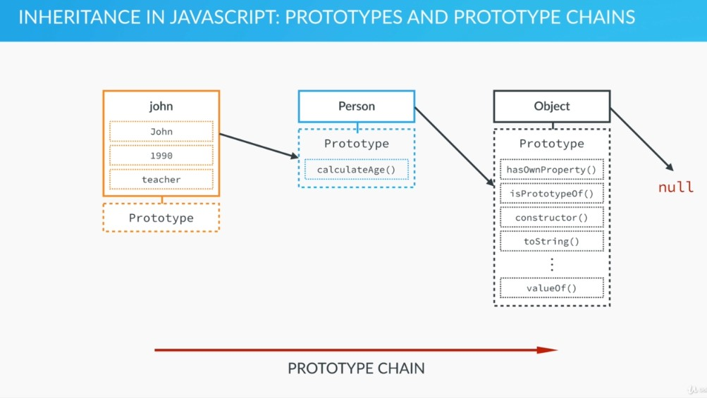
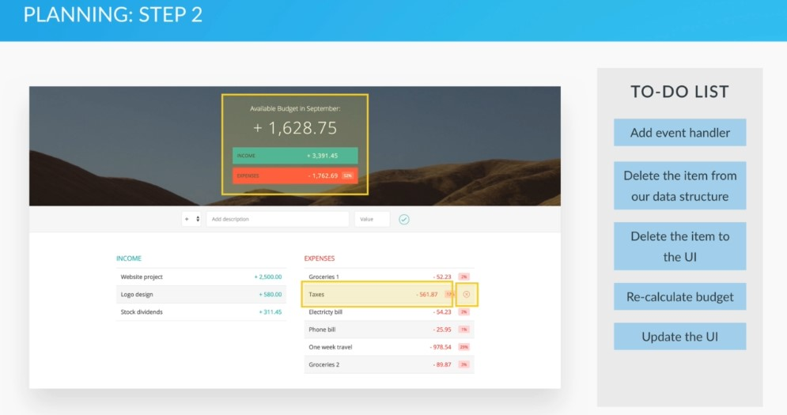
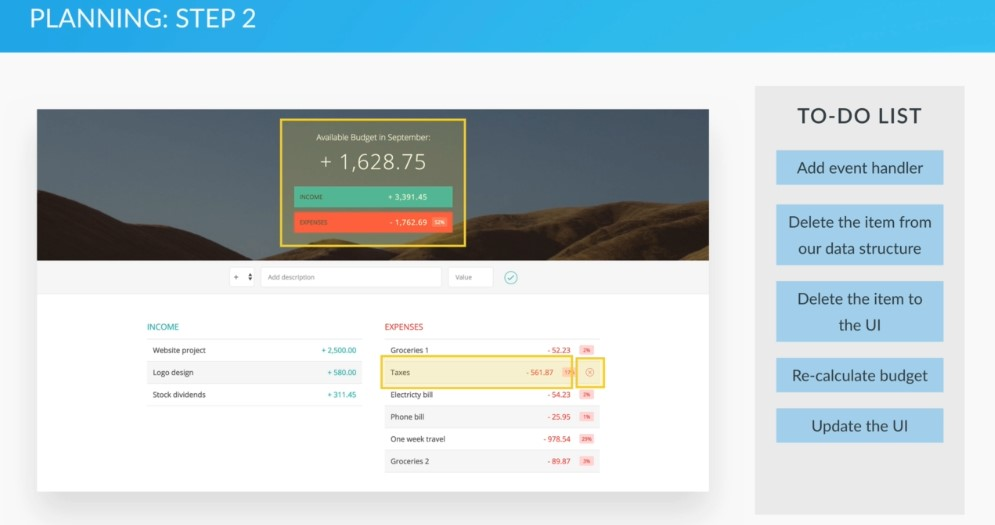
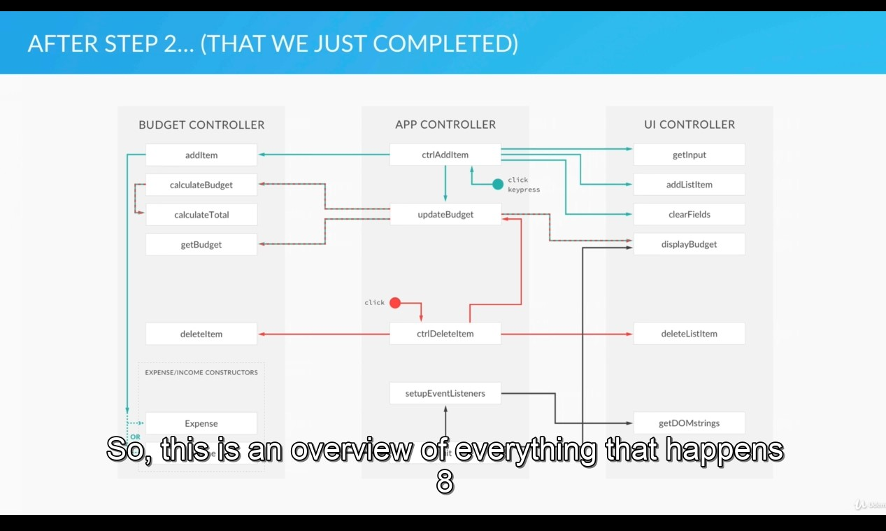
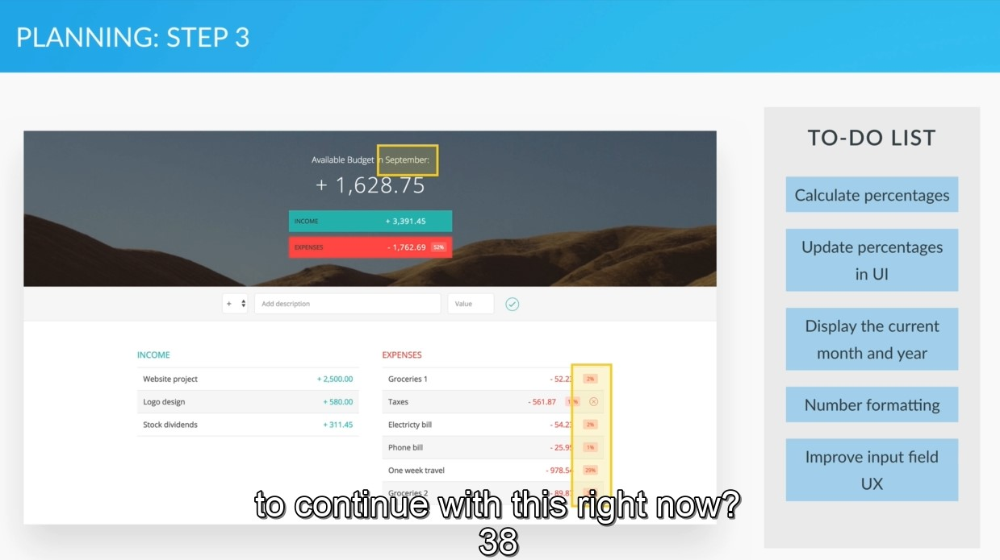

This keyword
var john = {
fName : 'John',
lastName: 'Smith',
birthYear: 1990,
family: ['jane', 'Mark', 'Bob', 'Emily'],
job : 'teacher',
isMarried: false,
calAge: function(birthYear) {
return 2018 - birthYear;
}
no 'this' keyword
calAge: function() {
return 2018 - this.birthYear;
} with 'this' keyword
calAge: function() {
this.age = 2018 - this.birthYear;
} with 'this' keyword and we create object on the fly -> this.age
we need to call john.calcAge() 1st before it can produce a value.
}
if the property is inside the method, we can use the 'this' keyword to set and read the property
// ES5 f7v7
ung 'this' keyword will not work sa addEventListener() kasi my function un
so ang workaround is mag declare ng var self = this.
var box5 = {
color: 'green',
position: 1,
clickMe: function() {
var self = this;
document.querySelector('.green').addEventListener('click', function() {
var str = 'This is box number ' + self.position + ' and it is ' + self.color;
alert(str);
});
}
}
//box5.clickMe();
// ES6
but in es6 we dont need to declare var self = this, the arrow function will
takecare this for us
const box6 = {
color: 'green',
position: 1,
clickMe: function() {
document.querySelector('.green').addEventListener('click', () => {
var str = 'This is box number ' + this.position + ' and it is ' + this.color;
alert(str);
});
}
}
box6.clickMe();
// BECAREFUL!
clickMe: () => <--- eto daw. mawawalan tayo ng this keyword sa inner.
so bali ung this.color and this.position is hindi natin maacess. so bali parang
mag declare din tayo ng var self = this
const box66 = {
color: 'green',
position: 1,
clickMe: () => {
document.querySelector('.green').addEventListener('click', () => {
var str = 'This is box number ' + this.position + ' and it is ' + this.color;
alert(str);
});
}
}
box66.clickMe();
div
ES5
Person.prototype.myFriends5 = function(friends) {
var arr = friends.map(function(el) {
return this.name + ' is friends with ' + el;
}.bind(this));
// etong bind this daw. is to create a copy of new function tapos
.bind(this)
console.log(arr);
}
ES6
HERE no need to use .bind(this) the ES6 arrow function ease that for us
Person.prototype.myFriends6 = function(friends) {
var arr = friends.map(el => `${this.name} is friends with ${el}`);
console.log(arr);
}
new Person('Mike').myFriends6(friends);
*/
// ES5
Person.prototype.myFriends5 = function(friends) {
var arr = friends.map(function(el) {
return this.name + ' is friends with ' + el;
}.bind(this));
// etong bind this daw. is to create a copy of new function tapos
// na instead na gumawa tayo ng var self = this;
.bind(this)
console.log(arr);
}
Functions and Methods
.push() - create at the end of an Arrays .unshift() - create at the beginning .pop() - removes at the end .shift() - removes at the beginning .indexOf() - will return the position of the argument - that we pass in inside of the array - if the indexOf(value or position) is not present in the array it will return -1 parsInt() - convert to number parseFloat() - convert string to float number with decimals reduce(calback(previous,current,index)) - reduce an array to a single value - similar to forEach() and Map(), because all of this loop through arrays. - the difference is this one loop through an array to acumulate all the values into a single value - perfect for adding all the elements in an array -the callback has access to current value, current index, and previous data - another argument is the initial value of the accumulator, the number at which we want to startReduce example for the callback function -> (pre, cur, index) => pre + cur - plus can be times,divide, or minus last argument - 0 - index base const sum = arr.reduce((pre, cur, index) => pre + cur, 0)setTimeout(1. callback, 2.timer, 3.an argument we can pass to the callback ) - gets monaman dba? optional lang ung pang 3rd - ES6 - startsWith() - return true or false - startsWith('S') endsWith() - returns true of false - endsWith('S'); includes() - returns true or false - if the asking letter includes in a string repeat( count how many ) - returns how many string - findIndex() - map(current Element, current index, array itself) -.indexOf() - example var john = ['Mr','single', 1990, 'manila'] john.indexOf(1990); // now it will tell us which position in the john array is 1990 - now its the [2] or 3rd slot.Math.floor() - removes integer. Math.random() - gives random number Anonymous functions - doesnt have a name and cannot be reused.document.querySelector('.btn--roll').addEventListener('click', function(){ DO something! });
OBJECTS
Difference between function constructor and object.create
Both share personProto - is that the object.create builds an object that inherits directly from the one that we passed into the first argument. - while function constructor - the newly created object inherits from the constructor's prototypeObject.create
var personProto = { calculateAge: function(){ console.log(2021 - this.yearOfBirth) } }; OBJECT.CREATE ----- Two ways var john = Object.create(personProto); john.name = 'John'; john.yearOfBirth = 1990; john.job = 'Teacher'; var jane = Object.create(personProto, { name: {value: 'Jane'}, yearOfBirth: {value: 1968}, job: {value: 'I.T'} })Function constructor
/* //Constructor name starts Big letter var Person = function(firstname, birthPlace, job) { this.firstname = firstname; this.birthPlace = birthPlace; this.job = job; } //because we use mark as new Person. we can now use the //variable we created in Person object var mark = new Person('Mark', 1990, 'Designer') console.log(mark.firstname) //we create a function prototype on the fly //so now mark can use it, because we create a new Person for him Person.prototype.calculateAge = function (){ console.log( 2021 - this.birthPlace ); } mark.calculateAge()Primitives vs Objects
The big difference between Primitive and Objects is that variables containing primitives actually hold that data inside of variable itself On objects it very different variable associated with objects DO NOT actually containing the object -- but instead they contain a reference to the place in memory where the objects sessionStorage, so where the objects stored - AGAIN - a variable declared as an object does not have a real copy of the object it points to that object! AHA! When we pass Primitive to the function it will simply copy as created we can change it as we want, it will never affect the variable on the outside because it is a PRIMITIVE
EVENTS
event.target = if inconsole log = it will give us the HTML element that we clicked
Tracks
Tricks
STATE VARIABLE
//gamePlaying - is the state variable. it tells TRUE or FALSE
// STATE variable tell us the condition of a system
sweet
Variable - is a container which store a value and use it over and over again
Operator Precedence
x = y = ( 3 + 5) * 4 - 6 ; = 26
1st - y = 26
2nd - x = 26
- Because its Assigment Precedence right-to-left
Operators short
x = x *2 = x *= 2; same
Data Types
- Number - numbers
- String - text
- Boolean - true of false
- Undefined - Data type of a variable that does not have a value yet
- Null - Also mean non-existent
Selector and DOM manipulators
querySelector - it selects the first element it will find
textContent - output only a text
innerHTML - output a HTML
Loop
the nodeList doesnot have forEach method
F2V6 - 6. Variable Mutation and Type Coercion
f2v11 - if else
f2v13. The Ternary Operator and Switch Statements
BREAK - we use break so after evaluating 1 case with true value, - it will stop evaluating others RETURN - return what value it gives and also immediately finish the function DEFAULT - if nothing is correct. the default will execute We can use multiple 'case' with same value case 'teacher': case 'instructor': YOUR FUNCTION HERE break;const day = 'friday'; switch (day) { case 'monday': // day === 'monday' console.log('Plan course structure'); console.log('Go to coding meetup'); break; case 'tuesday': console.log('Prepare theory videos'); break; case 'wednesday': case 'thursday': console.log('Write code examples'); break; case 'friday': console.log('Record videos'); break; case 'saturday': case 'sunday': console.log('Enjoy the weekend :D'); break; default: console.log('Not a valid day!'); } if (day === 'monday') { console.log('Plan course structure'); console.log('Go to coding meetup'); } else if (day === 'tuesday') { console.log('Prepare theory videos'); } else if (day === 'wednesday' || day === 'thursday') { console.log('Write code examples'); } else if (day === 'friday') { console.log('Record videos'); } else if (day === 'saturday' || day === 'sunday') { console.log('Enjoy the weekend :D'); } else { console.log('Not a valid day!'); }switch (true) { case age < 13: console.log(firstName + ' is a boy'); break; case age >= 13 && age < 20: console.log(firstName + ' is a teenager.'); break; default: console.log(firstname + ' is a man. '); }
f2v18. Function Statements and Expressions
Statements
- performs action and does not return immediate result - ex, while loopFunction Declaration
- Does not return immediate value function calculate(job, firstName){ }Function Expression
- Does return immediate value var WhatIDo = function(job, firstName){ switch(job){ case 'teacher': case 'driver': case 'designer': } }
f1919. Arrays
f2v22. Objects and Properties
2 Declaration of objects.
Object Literal
var john = { fName : 'John', lastName: 'Smith', birthYear: 1990, family: ['jane', 'Mark', 'Bob', 'Emily'], job : 'teacher', isMarried: false, }
New Object syntax
var jane = new object(); jane.firstName = 'jane'; jane.birthYear = 1968; jane['lastName'] = 'smith'; // same result
f2v23. Objects and Methods
var john = {
fName : 'John',
lastName: 'Smith',
birthYear: 1990,
family: ['jane', 'Mark', 'Bob', 'Emily'],
job : 'teacher',
isMarried: false,
calAge: function(birthYear){
return 2018 - birthYear;
}
}
john.age = john.calcAge(); // we create an object on the fly
f2v26. Loops and Iteration
For Loop
for( var i = 0; i < john.length ; i++ ){ console.log(john[1]) }1st - initial value of the counter 2nd - condition 3rd - iteration after
while loop
var i = 0
while( i < john.length){
console.log(john[i]);
i++
}
Continue and Break Statements
var john = ['smith', 'single',1990, 'designer', false];
for( var i = 0; i < john.length ; i++ ){
if(typeof john[i] !== 'string') continue;
so if this is false it will continue to the next statement which is the console.log
nalito ko dito talga. kasi nga TRUE ung
console.log(john[i])
}
var john = ['smith', 'single',1990, 'designer', false];
for( var i = 0; i < john.length ; i++ ){
if(typeof john[i] !== 'string') break;
console.log(john[i])
}
// if the if(typeof john[i] !== 'string') ;
// encounters a not a string then it will stop or break the loop
reverse output
for ( var i = john.length - 1; i >= 0 ; i--){
console.log(john[i]);
}
f3 3. How JavaScript Works Behind the Scenes
f3v5. Execution Contexts in Detail Creation and Execution Phases and Hoisting
- functions and variables hoisted in Javascript means they are available before execution phase starts
f3v6. Hoisting in Practice
hoisting for function - is only working on function Expression
calculateAge(year){
console.log(2018 - year);
}function Expression
var retirement = function(year){
console.log(65 - (2016 - year))
} function Declaration
Hoisting in variables
console.log(age)
var age = 23;
function foo(){
var age = 44;
console.log(age);
}
foo()
console.log(age);
result is : 44; and 23;
because - var age = 23 is declared globally
- while ung foo() var age is declared inside function
explaination -
- var age = 23; declared in the global execution
- while on var foo - creates their own execution
f3v7. Scoping and the Scope Chain

f2v8 - 9 The 'this' Keyword
'this' keyword on function Expression
gives us the window object.
function foo(){}
'this' keyword gives us the object that we defined inside the object
in function declaration
var foo = {}
var john = {
name: 'John',
yearOfBirth: 1990,
calcAge: function (){
console.log(this) <- gives us the john object
function innerFunction(){
console.log(this) <- gives us the window object
}
innerFunction()
}
}
john.calcAge()
Method Borrowing
var mike = {
name : 'mike',
byear: 1968
}
mike.calcAge = john.calcAge;
ginamit natin ung method ni john. dun sa kabila.
-now ung 'this' keyword na e, is pointing na dito kay Mike!
f4 on ward is a PIG GAME.
f5v 3. Everything Is an Object Inheritance and the Prototype Chain
Types of Objects
Primitives
numbers String Booleans Undefined NullEverything else
Arrays Function Objects Dates Wrapper for numbers, Strings, BooleansInheritance
is when 1 object is based on another object - it's when 1 object gets access to another's properties and methods - inheritance works by using prototype posible with prototype property that every object has - every object has prototype properties Null - Has no prototype
Summary
- Every JS object has a prototype property, which makes inheritance posible in JS
- The prototyp property of an object is where we put methods and propeties that we want
other objects to inherit
- The constructor prototype property is NOT the prototype of the constructor itself,
its the prototype of ALL instances that are created through it;
- When certain method (or property) is called, the search starts in the object itself,
and if it cannot be found, the search moves on to the objects prototype.
This continues until the method is found: PROPERTY CHAIN.

f5v 4. Creating Objects Function Constructors
// Function constructor
function Question(question, answer, correct){
this.question = question;
this.answer = answer;
this.correct = correct;
}
/*
//Constructor
var Person = function(firstname, birthPlace, job) {
this.firstname = firstname;
this.birthPlace = birthPlace;
this.job = job;
}
//because we use mark as new Person. we can now use the
//variable we created in Person object
var mark = new Person('Mark', 1990, 'Designer')
console.log(mark.firstname)
//we create a function prototype on the fly
//so now mark can use it, because we create a new Person for him
Person.prototype.calculateAge = function (){
console.log( 2021 - this.birthPlace );
}
mark.calculateAge()
*/
f5v 5. The Prototype Chain in the Console
f5v 6. Creating Objects Object.create
//Object.create
// var personProto = {
// calculateAge: function(){
// console.log(2021 - this.yearOfBirth)
// }
// };
// Two ways
// var john = Object.create(personProto);
// john.name = 'John';
// john.yearOfBirth = 1990;
// john.job = 'Teacher';
// var jane = Object.create(personProto, {
// name: {value: 'Jane'},
// yearOfBirth: {value: 1968},
// job: {value: 'I.T'}
// })
// Both share personProto
/*
The difference between object.create and function constructor
- is that the object.create builds an object that inherits directly
from the one that we passed into the first argument.
- while function constructor - the newly created object inherits
from the constructor's prototype
*/
f5v 7. Primitives vs. Objects
f5v 9. First Class Functions Functions Returning Functions
The starter code is in 14-OOP
/*
Functions returning function
*/
function interviewJobs(job){
if(job === 'designer'){
return function(name){
console.log(name + ', can you please explain that UX design is?');
}
}
else if( job === 'teacher'){
return function(name){
console.log('What subject do you teach ' + name + '?');
}
} else {
return function(name){
console.log('Hello ' + name + ', what do you do?');
}
}
}
// store them in variable so we can us the name on returning function
var teacherQuestion = interviewJobs('teacher');
var designerQuestion = interviewJobs('designer');
teacherQuestion('John');
designerQuestion('Mark');
//Without storing to variable
interviewQuestion('Teacher')('Grace');
f5v10. Immediately Invoked Function Expressions (IIFE)
(function {
//Body
})(); <---- invoker
f5v11. Closures
function retirement(retirementAge) {
var a = ' years left until retirement.';
return function (yearOfBirth) {
var age = 2021 - yearOfBirth;
console.log(retirementAge - age + a);
};
}
//two ways to call
//1
var retirementUS = retirement(66);
retirementUS(1990);
var retirementGermany = retirement(65);
retirementGermany(2020);
var retirementIceland = retirement(67);
retirementIceland(1990);
//2
retirement(66)(1990);
f5v12. Bind, Call and Apply
CALL, APPLY and BIND - 1st argument is 'this' <- which is the object
var john = { name: 'John', age: 17, job: 'Designer', presentation: function(style, timeOfDay){ if(style === 'formal'){ console.log("Good " + timeOfDay + ", Ladies and gentlemen! I'm " + this.name + ', I\'m a ' + this.job + " and I'm " + this.age + " years old." ); } else if (style === 'friendly' ){ console.log('Hey! What\'s up? I\'m '+ this.name + ', I\'m a ' + this.job + " and I'm " + this.age + " years old. Have a nice " + timeOfDay); } } }; var emily = { name: 'Emily', job: 'Teacher', age: 22 }Bind()
- doesnt immediatly call the function, but instead it generates a copy of a function - so that we can store it somewhere - useful for function with preset argument - it will return a function() - so we have to store it at function somewhere //we will use bind method to create a function, with preset argument //the 1st argument is the 'this' //we create johnFriendly with preset argument 'friendly' var johnFrendly = john.presentation.bind(john, 'friendly'); johnFrendly('Evening'); <- already has a friendly argument. with bind() john.presentation('formal','Morning'); <- while this one has no bind() Another example <----- // ES5 f7v8 Person.prototype.myFriends5 = function(friends) { var arr = friends.map(function(el) { return this.name + ' is friends with ' + el; }.bind(this)); // etong bind this daw. is to create a copy of new function tapos // na instead na gumawa tayo ng var self = this; .bind(this) console.log(arr); } // ES6 HERE no need to use .bind(this) the ES6 arrow function ease that for us Person.prototype.myFriends6 = function(friends) { var arr = friends.map(el => `${this.name} is friends with ${el}`); console.log(arr); } new Person('Mike').myFriends6(friends); */Call()
//call() - as method borrowing - we borrowed method from john -> not john call(this(emliy), arg1, arg2) - the first argument of call method is always to set the 'this' variable - it allow us to set this variable on 1st argument. so we can borrow other method john.presentation.call(emily, 'friendly', 'noon');apply()
// apply() - this arguments accepts as array // (2 arguments) - 1st variable is 'this' and then next is an array where all other arguments go john.presentation.apply(emily, ['friendly', 'Darkest day']);
GOOD EXAMPLE OF CODING f5v 14. Coding Challenge 7 Solution, Part 1
// Coding Challenge!
// <-- IIFE tp make our code private and does not interfere other code
// so if the programmers code has a variable question - our code will not interfere because its private
( function(){
function Question(question, answer, correct){
this.question = question;
this.answer = answer;
this.correct = correct;
}
// create a function using prototype to display a question
// so we can use it below the execution
Question.prototype.displayQuestion = function(){
console.log(this.question);
for(var i = 0; i < this.answer.length; i++){
console.log(i + ': ' + this.answer[i]);
}
}
Question.prototype.checkAnswer = function(ans){
if(ans === this.correct ){
console.log('Correct answer!')
} else {
console.log('Wrong answer. Please try again!');
}
}
//create new objects using constructor
var _q1 = new Question('Is Javascript the coolest programming language in the world?',
['Yes' ,'No'] , 0);
var _q2 = new Question('What is the name of the course\'s teacher?',
['John', 'Michael', 'Jonas'], 2);
var _q3 = new Question('What does best describe coding?', ['Boring', 'Hard', 'fun', 'Tedious'], 2);
//store all the question in an array
//so we can loop
var questions = [_q1, _q2, _q3];
// create a random number from their question length
// so we can randomized the question
var n = Math.floor(Math.random() * questions.length);
//meron tayong access sa displayQuestion kasi gumawa tayo ng prototype ung the constructor
questions[n].displayQuestion();
//asking answer from the user, when they input on the prompt
var answer = parseInt(prompt('Please enter the correct answer.'));
//placed here, so after they answered on the prompt the value evaluated
questions[n].checkAnswer(answer);
})();
PRACTICE AND READ THIS! f5v 15. Coding Challenge 7 Solution, Part 2
/*
Summary
1. We create function constructor
2. We create new objects - eto ung value bale ng mga argument sa function constructor na Question()
2a. tapos nilagay natin ung mga new object sa array
2aa. var questions = [_q1, _q2, _q3];
2b.then we create random number para maloop ung mga new objects for random questions. then base on the length ng answer
e maiconsole.log natin lahat ng answers
2ba. na mkikita mo sa prototype na gnawa natin on prototype.displayQuestion().
2c. tapos i console.log natin ung lahat ng answer. pero xempre naconsole.log na natin ung question
3. then we create a variable answer - which is the prompt() - that will hold the answer
3a. from here, meron na value ung argument na answer from the Question(question,answer,correct) function constructor.
3b. so ngayon pwede na tayong gumawa ng function prototype.checkAnswer(ans, callback)
3c. so to call the checkAnswer()
3ca. so the prototype.checkAnswer(ans) accepts an argument - which is the var answer = prompt()
3cb. which will tell us if the answer on the console.log is correct on wrong.
4. Now we create a function nextQuestion()
4a. it will evaluate if the user will enter the answer or exit.
4b. inside it, is the 3 essential part of the game which is the
4c. random number, the answer, and the displayQuestion();
4d. and also if(exit) if the user did not type exit it will call the protoype.checkAnswer()
4da. the prototype.checkAnswer() then will console.log the answer.
4db. after calling the prototype.checkAnswer() it will run again the nextQuestion();
5. EXPERT . we then create a function closure score() to hold and increase the score of the user when
5a. when the answer is correct and do nothing when the answer is wrong.
5b. then console.log() the score on
5c. questions[n].checkAnswer(parseInt(answer), keepScore);
5ca. here we add score() "keepScore" as an argument sa checkAnswer. para masala dun sa check answer prototype.
5cb. we then use it there as a callback
5cc. so if the this.correct === correct ( which is the 3rd argument of the object)
5cca. var _q1 = new Question('Is Javascript the coolest programming language in the world?',['Yes', 'No'], 0 ); <<-- zero is the 3rd. or the correct answer
5cd. then the callback(true) or keepScore(true) or score()(true); <- that how it reads
5d. then we we call the prototype.displayScore to display on line 99 this.displayScore(sc);
*/
//-----------------------------1-----------------------------
// <-- IIFE tp make our code private and does not interfere other code
// so if the programmers code has a variable question - our code will not interfere because its private
(function () {
function Question(question, answer, correct) {
this.question = question;
this.answer = answer;
this.correct = correct;
}
//-----------------------------1-----------------------------
// create a function using prototype to display a question
// so we can use it below the execution
// ---2b
Question.prototype.displayQuestion = function () {
console.log(this.question);
for (var i = 0; i < this.answer.length; i++) {
console.log(i + ': ' + this.answer[i]);
}
};
//ung callback dito is ung - score() na declared sa baba
Question.prototype.checkAnswer = function (ans, callback) {
//var score
var sc;
if (ans === this.correct) {
console.log('Correct answer!');
//remember that this is just a keepScore function
// so we pass in true
//becoz we know that here, when that answer is equal to the correct answer
//- the answer will be correct
sc = callback(true);
} else {
console.log('Wrong answer. Please try again!');
//false is becoz to not update the score
sc = callback(false);
}
//so after creating prototype below, the displayScore
//we now use it here, after the correct or wrong answer
//if the score will update or not it will display here
this.displayScore(sc);
};
Question.prototype.displayScore = function(score){
console.log('your current score is: ' + score);
console.log('----------------------');
}
//-----------------------------2-----------------------------
//create new objects using constructor
var _q1 = new Question(
'Is Javascript the coolest programming language in the world?',
['Yes', 'No'],
0
);
var _q2 = new Question(
"What is the name of the course's teacher?",
['John', 'Michael', 'Jonas'],
2
);
var _q3 = new Question(
'What does best describe coding?',
['Boring', 'Hard', 'fun', 'Tedious'],
2
);
//store all the question in an array
//so we can loop
var questions = [_q1, _q2, _q3];
//-----------------------------2-----------------------------
// we create a closure function. which returns a function
function score(){
var sc = 0;
return function(correct){
if(correct){
sc++;
}
return sc;
}
}
// we have always access to the variable of score()
// so we can call it in the prototype and pass an argument which is like this score()(true)
var keepScore = score();
//we create here a function so we can use it over and over again
//expert level challenge
function nextQuestion() {
// create a random number from their question length
// so we can randomized the question
var n = Math.floor(Math.random() * questions.length) ;
//meron tayong access sa displayQuestion kasi gumawa tayo ng prototype ung the constructor
//Summary code ---2b 2c
questions[n].displayQuestion();
//-----------------------------3-----------------------------
//asking answer from the user, when they input on the prompt
//no parseInt dito kasi pwede rin syang mag enter ng exit
//placed here, so after they answered on the prompt the value evaluated
var answer = prompt('Please enter the correct answer.');
//-----------------------------3-----------------------------
//to stop the game
//if - we only want to call this question
//if the input from the user is not exit
if (answer != 'exit') {
//my parsInt dito kasi dito natin need ung number
//keepscore -
questions[n].checkAnswer(parseInt(answer), keepScore);
nextQuestion();
}
}
nextQuestion();
})();
f6v 4. Project Planning and Architecture Step 1
Create or draw a visual of the app, and divide it by modules
Create a To-Do list then divide it in modules
To-Do list - Get input value
-add new item to the ui
-update UI
-add the new item to our data structure
-calculate the budget
-add event handler
UI module - example - Get input value, add new item to the ui, update UI
Data module - add the new item to our data structure, calculate the budget
Controller - add event handler
Why we need this? - We create modules becoz we want to keep pieces of code that are
- related to one another together, inside of separate. independent, and organized units.
- and each of these modules, we'll have variables and functions that are private,
-which means that, they are only accessible inside the module.
- we want it so no other code can override our data
f6v5. Implementing the Module Pattern
Data encapsulation --> IIFE
- using the IIFE - allow us to hide implementation details of a specific module - from the outside scope so that we only expose - a public interface which is sometimes called an APIModule pattern
- concept of closure and IIFEModule pattern secret
The secret of the module pattern is that it returns an object containing all of the functions that we want to be public- this code cannot be accessed outside the inner scope - only the publicTest() only can, becoz of closure. Pag hindi mo naintindihan. intindihin mo.. while writing this naintindhan ko. dapat the future self naintindihan mo OKAY? What happen? - the execution context immediately called budgetController because of IIFE - then var x and var add() are declared, then return an object publicTest() - but the x and add() are private and only publicTest() has an access to them. - this object publicTest() was gets assigned to the budget variable AFTER publicTest() returns - what budget variable? meaning that is the whole budgetController var. - in short after budgetController() app finish it's just returned the publicTest() that has a variable x and add() function - even after the function executed. thats the power of closure
var budgetController = (function(){ ->inner<- var x = 23; var add = function(a) { return x + a; } ->inner<- return { publicTest:function(b){ console.log(b) }} })
//this variable will be IIFE that will return an object
//The secret of the module pattern is that it returns an object containing all of the functions that we want to be public
var budgetController = (function(){
var x = 23;
var add = function(a) {
return x + a;
}
return {
publicTest:function(b){
return add(b);
}
}
})();
//These Controller dont know each other. REALLY? LOL
var UIController = (function(){
})();
//this is the bridge of the two above
// we can also use the original argument name, but that is not good becoz
//when we change the name fox example(UIController), we will also change the name of the argument. and thats a long job
var controller = (function(budgetCtrl, UICtrl){
var z = budgetCtrl.publicTest(5);
return {
anotherPublic: function(){
console.log(z);
}
}
})(budgetController, UIController);
I saved it on budgety folder starte in scriptTest.js
f6v16 - Project Planning and archetecture
 

f6v17 - Event Delegation

2 Big use cases
1. When we have an element with lots of child elements that we are interested in.
- in this case instead we add event handler to all of these child element, we simply add it
- to the parent element, then determine in which part of the element event was fired
2. When we want an event handler attached to an element that is not yet in the DOM when our page is loaded.
- That's of course daw, because we cannot add an event handler, to something that is not on our page
- so in a case of deprecation that we're coding its actually both cases
- ie. we have a lot of expense or income items that are not in the DOM when we load our page,
- so ther is no way to attach an event handler to them
- and also there maybe a lot of items, so it wouldnt be useful to have one event handler attached ti each of them.
THAT IS WHY WE NEED TO USE EVENT DELEGATION
f6v21 - Project Planning and Architecture
What we have finished.
Planning
f6v28 - OUR FINAL ARCHITECHURE
f7v1 - Whats new in ES6 ES2015
f7v4 - Variable Declaration with let and Const
Folder - 7-ES6
LET - ung let daw is only accesible inside the block
- what is block? ung sa loob ng { }
- for example if () { sa loob neto }
CONS and LET - are block scope. not function scope
f7v7. Arrow Functions Basics
/////////////////////////////////
// Lecture: Arrow functions
const years = [1990, 1965, 1982, 1937];
// ES5
var ages5 = years.map(function(el) {
return 2016 - el;
});
console.log(ages5);
// ES6
let ages6 = years.map(el => 2016 - el); // Single Argument
console.log(ages6);
ages6 = years.map((el, index) => `Age element ${index + 1}: ${2016 - el}.`);
console.log(ages6);
- more than 1 args kaya my parenthesis
- backticks kasi isang block lang and also walang return
ages6 = years.map((el, index) => {
const now = new Date().getFullYear();
const age = now - el;
return `Age element ${index + 1}: ${age}.`
});
- with brackets {} and return kasi more than 1 line of code
console.log(ages6);
f7v8. Arrow Functions Lexical 'this' Keyword
// ES6 HERE no need to use .bind(this) the ES6 arrow function ease that for us
Person.prototype.myFriends6 = function(friends) {
var arr = friends.map(el => `${this.name} is friends with ${el}`);
console.log(arr);
}
new Person('Mike').myFriends6(friends);
*/
f7v9 - 9. Destructuring
// ES5
var john = ['John', 26];
//var name = john[0];
//var age = john[1];
// ES6
const [name, age] = ['John', 26];
console.log(name);
console.log(age);
const obj = {
firstName: 'John',
lastName: 'Smith'
};
const {firstName, lastName} = obj;
console.log(firstName);
console.log(lastName);
const {firstName: a, lastName: b} = obj;
console.log(a);
console.log(b);
function calcAgeRetirement(year) {
const age = new Date().getFullYear() - year;
return [age, 65 - age];
}
const [age2, retirement] = calcAgeRetirement(1990);
console.log(age2);
console.log(retirement);
*/
f7v10 10. Arrays in ES6 ES2015
/* const boxes = document.querySelectorAll('.box'); //ES5 var boxesArr5 = Array.prototype.slice.call(boxes); boxesArr5.forEach(function(cur) { cur.style.backgroundColor = 'dodgerblue'; }); //ES6 const boxesArr6 = Array.from(boxes); // it will transform the nodelist to an array Array.from(boxes).forEach(cur => cur.style.backgroundColor = 'dodgerblue'); //ES5 for(var i = 0; i < boxesArr5.length; i++) { if(boxesArr5[i].className === 'box blue') { continue; } boxesArr5[i].textContent = 'I changed to blue!'; } //ES6 for (const cur of boxesArr6) { if (cur.className.includes('blue')) { continue; } cur.textContent = 'I changed to blue!'; } //ES5 var ages = [12, 17, 8, 21, 14, 11]; var full = ages.map(function(cur) { return cur >= 18; }); console.log(full); console.log(full.indexOf(true)); console.log(ages[full.indexOf(true)]); //ES6 console.log(ages.findIndex(cur => cur >= 18)); console.log(ages.find(cur => cur >= 18)); *///ES5 Continue and break var ages = [12, 17, 8, 21, 14, 11]; var full = ages.map(function(cur) { return cur >= 18; }); for(var i = 0; i < boxesArr5.length; i++) { if(boxesArr5[i].className === 'box blue') { continue; } boxesArr5[i].textContent = 'I changed to blue!'; } //ES6 for (const cur of boxesArr6) { if (cur.className.includes('blue')) { continue; } cur.textContent = 'I changed to blue!'; }
f7v11. The Spread Operator
function addFourAges (a, b, c, d) {
return a + b + c + d;
}
var sum1 = addFourAges(18, 30, 12, 21);
console.log(sum1);
//ES5
var ages = [18, 30, 12, 21];
var sum2 = addFourAges.apply(null, ages);
console.log(sum2);
//ES6
const sum3 = addFourAges(...ages);
console.log(sum3);
const familySmith = ['John', 'Jane', 'Mark'];
const familyMiller = ['Mary', 'Bob', 'Ann'];
const bigFamily = [...familySmith, 'Lily', ...familyMiller];
console.log(bigFamily);
const h = document.querySelector('h1');
const boxes = document.querySelectorAll('.box');
const all = [h, ...boxes];
Array.from(all).forEach(cur => cur.style.color = 'purple');
f7v12. Rest Parameters
- rest parameters allow us to pass an arbitrary number of arguments into a function, and to use these arguments in that function - they use the same notation with three dots - but rest parameteres are exact opposite of spread operator - because spread operator takes an array, and tranforms it into single value - while rest parameters recieve a couple of single values and transform them into array when we call a function with multiple parametersSpread operator
- is used in the function callRest Operator
- is used in the function declaration//ES5 - in ES5 if we want to recieve number of arguments, then simply dont define any parameters for our function - just use arguments keywords arguments - is a special variable that we have access to in all functions function isFullAge5() { //console.log(arguments); OUTPUT - [1990, 1990, 1965] - looks array but the output is an object <-- the output is an object var argsArr = Array.prototype.slice.call(arguments); // if we want to transform it into an array argsArr.forEach(function(cur) { console.log((2016 - cur) >= 18); // output true,false,true }) } //isFullAge5(1990, 1999, 1965); //isFullAge5(1990, 1999, 1965, 2016, 1987); //ES6 - now, instead of not having any arguments we use rest parameters operator - what is this going to do is, as soon we call the function, it will transform the arguments - into an array, then pass it to the function function isFullAge6(...years) { years.forEach(cur => console.log( (2016 - cur) >= 18)); } isFullAge6(1990, 1999, 1965, 2016, 1987); //ES5 - function isFullAge5(limit) { var argsArr = Array.prototype.slice.call(arguments, 1); //slice() cut and copy argsArr.forEach(function(cur) { console.log((2016 - cur) >= limit); }) } //isFullAge5(16, 1990, 1999, 1965); isFullAge5(1990, 1999, 1965, 2016, 1987); //ES6 - much shorter and less complicated. function isFullAge6(limit, ...years) { years.forEach(cur => console.log( (2016 - cur) >= limit)); } isFullAge6(16, 1990, 1999, 1965, 2016, 1987); */
f7v13. Default Parameters
We use them whenever we want one or more parameters of a function to be preset, so we want them to have a default valueLecture: Default parameters /* // ES5 function SmithPerson(firstName, yearOfBirth, lastName, nationality) { lastName === undefined ? lastName = 'Smith' : lastName = lastName; nationality === undefined ? nationality = 'american' : nationality = nationality; this.firstName = firstName; this.lastName = lastName; this.yearOfBirth = yearOfBirth; this.nationality = nationality; } var john = new SmithPerson('John', 1990); output - firstname:john,lastName:undefined,yearOfBirth:1990,nationality:undefined - now, what if we want to add a default value for LastName and nationality? - the answer is below. pero actually nasa taas na sya. nilagay ko lang ulit dito lastName === undefined ? lastName = 'Smith' : lastName = lastName; nationality === undefined ? nationality = 'american' : nationality = nationality; ----------------- //ES6 - so here, nasa parameter na agad sya. function SmithPerson(firstName, yearOfBirth, lastName = 'Smith', nationality = 'american') { this.firstName = firstName; this.lastName = lastName; this.yearOfBirth = yearOfBirth; this.nationality = nationality; } var john = new SmithPerson('John', 1990); var emily = new SmithPerson('Emily', 1983, 'Diaz', 'spanish'); */
f7v14. Maps
- Maps() - is iterable so we can loop through them - why maps() are actually better than objects to create hash maps - is becoz we can use anything as keys and they are iterable - making it very easy to loop throught them and to manipulate data with them - really easy to get the size - we can easily remove data from a mapconst question = new Map(); question.set('question', 'What is the official name of the latest major JavaScript version?'); question.set(1, 'ES5'); question.set(2, 'ES6'); question.set(3, 'ES2015'); question.set(4, 'ES7'); question.set('correct', 3); question.set(true, 'Correct answer :D'); question.set(false, 'Wrong, please try again!'); - now, what if we want to retriev data from Map()? console.log(question.get('question')); // we use get() //console.log(question.size); <- parang length if(question.has(4)) { <- has to check //question.delete(4); <-- delete naman, kung gusto mag delete from map() //console.log('Answer 4 is here') } //question.clear(); // <- to clear all or make it empty ----- ForEach //question.forEach((value, key) => console.log(`This is ${key}, and it's set to ${value}`)); ----FOR OF for (let [key, value] of question.entries()) { <-- .entries() is to return all entries of our questions map <-- [key,value] - desctructuring daw. so we can store the key and values in two separate value if (typeof(key) === 'number') { console.log(`Answer ${key}: ${value}`); } } const ans = parseInt(prompt('Write the correct answer')); console.log(question.get(ans === question.get('correct'))); */
f7v15. Classes
//ES5
var Person5 = function(name, yearOfBirth, job) {
this.name = name;
this.yearOfBirth = yearOfBirth;
this.job = job;
}
Person5.prototype.calculateAge = function() {
var age = new Date().getFullYear - this.yearOfBirth;
console.log(age);
}
var john5 = new Person5('John', 1990, 'teacher');
//ES6
class Person6 {
constructor (name, yearOfBirth, job) {
this.name = name;
this.yearOfBirth = yearOfBirth;
this.job = job;
}
calculateAge() {
var age = new Date().getFullYear - this.yearOfBirth;
console.log(age);
}
// Static - methods that are attached to the class but not inherited by the class instances, so by object we create through the class
//the john6 we create below cannot interit this static method.
//so to call this -> Person6.greeting();
static greeting() {
console.log('Hey there!');
}
}
const john6 = new Person6('John', 1990, 'teacher');
Person6.greeting();
f7v16. Classes with Subclasses
Lecture: Classes and subclasses
//ES5
//Super Class
var Person5 = function(name, yearOfBirth, job) {
this.name = name;
this.yearOfBirth = yearOfBirth;
this.job = job;
}
Person5.prototype.calculateAge = function() {
var age = new Date().getFullYear() - this.yearOfBirth;
console.log(age);
}
// Sub class -
var Athlete5 = function(name, yearOfBirth, job, olymicGames, medals) {
Person5.call(this, name, yearOfBirth, job);
this.olymicGames = olymicGames;
this.medals = medals;
}
Athlete5.prototype = Object.create(Person5.prototype);
Athlete5.prototype.wonMedal = function() {
this.medals++;
console.log(this.medals);
}
var johnAthlete5 = new Athlete5('John', 1990, 'swimmer', 3, 10);
johnAthlete5.calculateAge();
johnAthlete5.wonMedal();
//ES6
class Person6 {
constructor (name, yearOfBirth, job) {
this.name = name;
this.yearOfBirth = yearOfBirth;
this.job = job;
}
calculateAge() {
var age = new Date().getFullYear() - this.yearOfBirth;
console.log(age);
}
}
// super() - we will call Person6 super class. unlike in ES5
// why we call extends Person6? because it has the same parameter
class Athlete6 extends Person6 {
constructor(name, yearOfBirth, job, olympicGames, medals) {
super(name, yearOfBirth, job);
this.olympicGames = olympicGames;
this.medals = medals;
}
wonMedal() {
this.medals++;
console.log(this.medals);
}
}
const johnAthlete6 = new Athlete6('John', 1990, 'swimmer', 3, 10);
johnAthlete6.wonMedal();
johnAthlete6.calculateAge();
f7v18 - Amazing Challenge you shud review this!
got to folder 7-ES6
f8v8. Asynchronous JavaScript Promises, AsyncAwait and AJAX
v2 - example of Asynchronous
Go to the 8-asynchronous-JS folder on final folder
f8v3. Understanding Asynchronous JavaScript The Event Loop
Watch the video
f8v4. The Old Way Asynchronous JavaScript with Callbacks
/* How it work? a simulation
- we geta bunch of recipe IDs from a server, then base on that, we select a recipe and then
- we get that recipe from the server after that
1. we create the first setTimeout() with recipeID, then log()
2. we create the 2nd setTimeout() that recieves an argument (id)
-has an object {recipe} and log
-the argument we pass is recipeID
3. we create the 3rd setTimeout()
- also reciv an argument (publisher)
- we pass the recipe.publisher
3.
And this is CALLBACK HELL. That is why in ES6 promises was created
when using asynchrounous JS
*/
function getRecipe() {
setTimeout(() => {
const recipeID = [523, 883, 432, 974];
console.log(recipeID);
setTimeout(id => {
const recipe = {title: 'Fresh tomato pasta', publisher: 'Jonas'};
console.log(`${id}: ${recipe.title}`);
setTimeout(publisher => {
const recipe2 = {title: 'Italian Pizza', publisher: 'Jonas'};
console.log(recipe);
}, 1500, recipe.publisher);
}, 1500, recipeID[2]);
}, 1500);
}
getRecipe();
f8v5. From Callback Hell to Promises
Promise - Object that keeps track about whether a certain event has happened already or not. - determines what happens after the event has happened; - events mentioned above is, async event like a timer finishing or data coming back from AJAX call - Implements the concept of a future value that we're expecting/* PROMISE 1. 1st part to redo the 1st part of traditional callback hell above - promise take 2 argument resolve and reject - if succesful the resolved will call and if not the reject 2. resolve - returns a value 3. so the setTimeout daw is impossible to failed kaya hindi natin tatawagin ung reject() 4. now that the 1st promise is done it only simply store the value to getIDs 5. All PROMISE() object inherits then() and catch() method 6. then() method allow us to add an event handler for the case that the promise - is fulfilled -- which means merong result 7. read the comment in 2ndA below - it explains the then() method 8. read 2ndB - it xplains catch() 9. const getIDs - is not a function becoz we dont need to pass any data 10. const getRecipe is a function becoz we need to pass the recipe ID. to the promise 11. const getRelated = a recipe which is related to the author 12. ang teknik, parang kada promise() my isang then() for them. */ ////1st --------------- 1st Promise const getIDs = new Promise((resolve, reject) => { setTimeout(() => { resolve([523, 883, 432, 974]); }, 1500); }); ///////-------------------- //gets mo? ako gets ko. //a function that reciv recipe ID //this is the 2nd setTimeout() above -converted in PROMISE() const getRecipe = recID => { return new Promise((resolve, reject) => { setTimeout(ID => { const recipe = {title: 'Fresh tomato pasta', publisher: 'Jonas'}; resolve(`${ID}: ${recipe.title}`); }, 1500, recID); }); }; //the argument passed on setTimeout(cb,fn,time,argument) // cb to argument - is the value we will pass for this promise // what? tangina anganda ng explainiation mo ser! const getRelated = publisher => { return new Promise((resolve, reject) => { setTimeout(pub => { const recipe = {title: 'Italian Pizza', publisher: 'Jonas'}; resolve(`${pub}: ${recipe.title}`); }, 1500, publisher); }); }; //2ndA -------------------- // what we do here is to pass a callback() which will hanlde what we do //in case the promise was successful //the callback here can take an argument - hindi nya sinabi kung ilan // the argument here will be the result of our 1st promise we created above, so in that case the array[] // chaining - //this is handling the 1st promise above getIDs .then(IDs => { console.log(IDs); //chaining - we can return a promise from this method here // then it will simply add new promise (1A) to then() method below - //getRecipe 2A return getRecipe(IDs[2]); // this will return a promise }) //this will handle the 2nd promise above //1A new promise then() //this will hanlde the result of getRecipe()2A promise above //this will use the 2nd setTimeout() above. // ung recipe argument is from the 1st then() result .then(recipe => { console.log(recipe); return getRelated('Jonas Schmedtmann'); }) //this will handle 3rd promise above .then(recipe => { console.log(recipe); }) //2ndB--explaining the catch me //catch method will allow us to add event handler for the case that a promise gets rejected // so in this case console.log() error .catch(error => { console.log('Error!!'); });
f8v6. From Promises to AsyncAwait
In ES8 or ES2017 - something called Async/Await - for the developers to consume promises